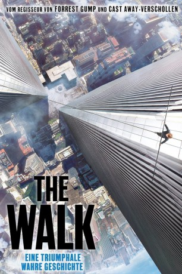

#2710 The Walk
 gesehen am 21.12.2015
gesehen am 21.12.2015
 
 IMDB-Wertung: 7.3 / 10
IMDB-Wertung: 7.3 / 10  Metascore: 70
Metascore: 70 
Es ist eine ebenso irrsinnige wie inspirierende Aktion, die in den späten Sechziger Jahren im Wartezimmer eines Zahnarztes ihren Anfang nimmt. Dort liest Philippe Petit (Joseph Gordon-Levitt) vom Bau des World Trade Centers. In diesem Moment hat der tollkühne französische Akrobat die Herausforderung gefunden, auf die er sein Leben lang gewartet hat. Er entschließt sich, ein Drahtseil zwischen den Twin Towers zu spannen und darauf zu laufen. Dem verbotenen Balanceakt gehen zermürbende Vorbereitungen voraus, bei denen Petit Hilfe von internationalen Unterstützern, seiner Freundin Annie Allix (Charlotte Le Bon) und seinem Mentor Papa Rudy (Ben Kingsley) bekommt. Nach der anstrengenden Vorarbeit balanciert Petit am 7. August 1974 ganze 45 Minuten auf dem Seil, bis er von Sicherheitsleuten überwältigt wird...
Jahr: 2015
Dauer: 123 Minuten
FSK: 6
Land: USA Studio: Sony Pictures ReleasingTonspuren: DD2.0 - ,
Untertitel: , , Deutsch, Englisch, Französisch, , , Koreanisch, , , , , ,
Auflösung: 1080p (1920x800) Größe: 11571 MB
Genre: Thriller, Drama, Abenteuer, Biographie
Regisseur:  Robert Zemeckis
Robert Zemeckis
Drehbuch: Robert Zemeckis, Christopher Browne, Philippe Petit
Soundtrack: Alan Silvestri
Darsteller:
 Joseph Gordon-Levitt als Philippe Petit
Joseph Gordon-Levitt als Philippe Petit- Inka Malovic als Woman in Chalk Circle
- Jean-Robert Bourdage als Dental Patient
- Soleyman Pierini als Boy Petit
 Ben Kingsley als Papa Rudy
Ben Kingsley als Papa Rudy Charlotte Le Bon als Annie
Charlotte Le Bon als Annie- Catherine Lemieux als Texan Tourist Woman
 Larry Day als Texas Tourist Man
Larry Day als Texas Tourist Man- Clément Sibony als Jean-Louis
- Vlad Stokanic als Portly Photographer
 Philippe Hartmann als Notre Dame Police Officer
Philippe Hartmann als Notre Dame Police Officer- César Domboy als Jeff / Jean-François
- Joel Rinzler als US Customs Agent
 Mark Camacho als Guy Tozzoli
Mark Camacho als Guy Tozzoli Steve Valentine als Barry Greenhouse
Steve Valentine als Barry Greenhouse James Badge Dale als Jean-Pierre / J.P.
James Badge Dale als Jean-Pierre / J.P. Ben Schwartz als Albert
Ben Schwartz als Albert- Benedict Samuel als David
- Mizinga Mwinga als Officer Foley
- Stuart Fink als Elevator Operator
- Yanik Ethier als Mysterious Visitor
 Sergio Di Zio als Officer Genco
Sergio Di Zio als Officer Genco- Daniel Harroch als Officer Clemenza
- Jason Deline als Officer Tessio
 Kwasi Songui als Man in Plaid Sports Coat
Kwasi Songui als Man in Plaid Sports Coat- Adam Bernett als Bearded Man
 Karl Graboshas als Earbud Guy
Karl Graboshas als Earbud Guy Jason Blicker als Officer Daley
Jason Blicker als Officer Daley- Karl Werleman als Engineer Cop
- Leif Anderson als Officer Cicci
- Trevor Botkin als News Reporter
- Rebecca Croll als News Reporter
- Gara Nlandu als News Reporter
 Melantha Blackthorne als Parisian Flower Child , uncredited
Melantha Blackthorne als Parisian Flower Child , uncredited- Momo Casablanca als Waiter , uncredited
- Julien Heron als Policeman , uncredited
- Galia Oliel-Sabbag als Street show spectator , uncredited
 Nathaly Thibault als Secretary , uncredited
Nathaly Thibault als Secretary , uncredited- Guillaume Baillargeon als Outdoor Café Man
- Émilie Leclerc als Outdoor Café Woman
- Mark Trafford als American Tourist
- Lucas Ramacière als Boy in Chalk Circle
- Martin Lefebvre als Gendarme
- Philippe Bertrand als Gendarme
- Laurence Deschênes als Young Girl with Candy
- Patricia Tulasne als Dental Office Receptionist
- Sylvie Lemay als Dental Patient
- Sasha Dominique als Dental Patient
- Jade Kindar-Martin als Circus High Wire Performer
- Patrick Baby als Petit's Father
Datei: X:\2015(N-Z)\Walk, The (2015, FSK6, 1920x800).mkv seit 05.12.2015
Festplatte: HD 2015(A-Z)
 Es gibt insgesamt 161 Filme in der Gruppe '2015(N-Z)'
Es gibt insgesamt 161 Filme in der Gruppe '2015(N-Z)'